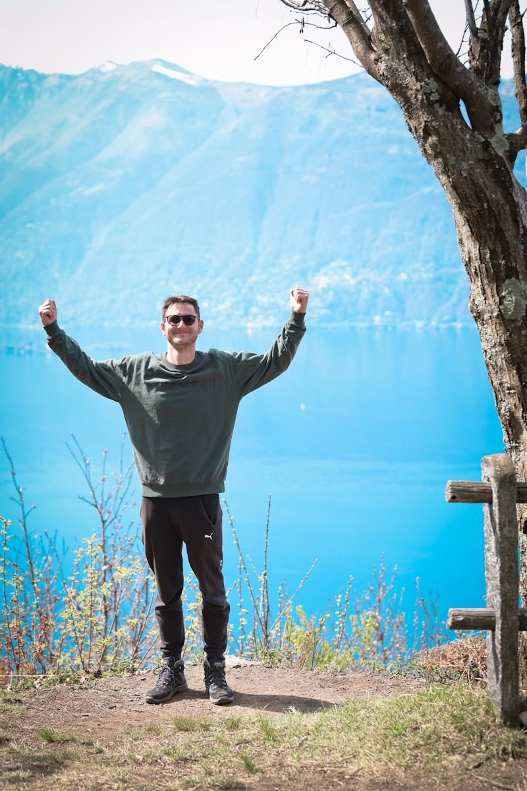

Online-Programm3-Wochen-Onlinekurs „Kraftkurs“
Intensives Online-Programm mit Fokus auf Ängste und innere Stärke. Live-Sitzungen, tägliche Impulse, persönlicher WhatsApp-Support und eine begleitende Gruppe – für echten Wandel in kurzer Zeit.
Mehr erfahren